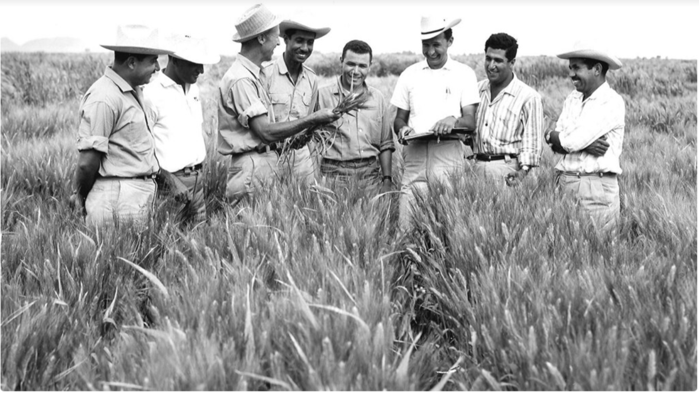

Dr. Norman Borlaug
The man who saves billion lives

Dr. Norman Borlaug,third from the left,train biologist in mexico on how to increase wheat yields-part of his life-long war on hunger
- 1914- Born in Cresco,Iowa
- 1915-Leaves his family's plan to attend the university of minnesota thanks to a Depression era program known as the "National Youth Administration".
- 1935- Has to stop school and save up money.Work in the civilian conservation corps,helping starving Americans. "I saw how food changed them" he said. "All of this left scars on him."
- 1937- Finishes university and takes a job in the US Forestry services
- 1938marries wife of 67 years Margret Gibson.Get laid off due to budget cuts.Inspired by Elvin Charles Stakman, he return to school study under Stakman, who teaches him about breedbody
- 1941- Tries to enroll in the military after the pearl Harbor attacks, but is rejected.Instead, the military asked his tab to work on waterproof glue,DDT to control malaria , disinfectants, and other applied science.
- 1942- Receives a Ph.D in Genetics and plant pathology
- 1944- Rejects a 100% salary increase from Dupont, leaves behind his pregnant wife, and files to Mexico to head a new plants pathology program. Over the next 16 years, his team breeds 6,000 different strains
- 1945 - Discovers a way to grown wheat twice each season, doubling wheat yields
- 1953 - crosses a short, sturdy dwarf breed of wheat with a high-yielding American breed, creating a strain that responds well to fertilizer. It goes on to provide 95% of Mexico wheat.
- 1962- Visits Delhi and brings his high-yielding strains of wheat to the Indian subcontinent in time to help mitigate mass starvation due to a rapidly expanding population
- 1970- receives the Nobel Peace Prize
- 1983 - helps seven African countries dramatically increase their maize and sorghum yields
- 1984- becomes a distinguished professor at Texas University
- 2005- states we will have to double the world food supply by2050." Argues that genetically modified crops are the only way we can meet the demand, as we run out of arable land. Says that GM crops are not inherently dangerous because been genetically modifying plants and animals for a long time. Long before we called it science, people were selecting the best breeds."
- 2009 He died at the age of 95
Here's a time line of Dr. Borlaug's life:
" Borlaug's life and achievement are testimony to the far-reaching contribution that one man's towering intellect,persistence and scientific vision can make to human peace and progress."
-- Indian Prime Minister Manmohan Singh